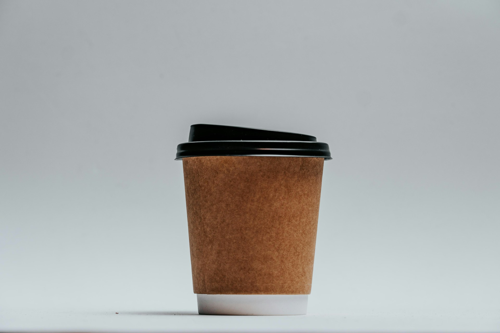
EL IMPACTO
Cada taza tiene una huella. Descubrí cómo nuestras decisiones afectan al planeta.
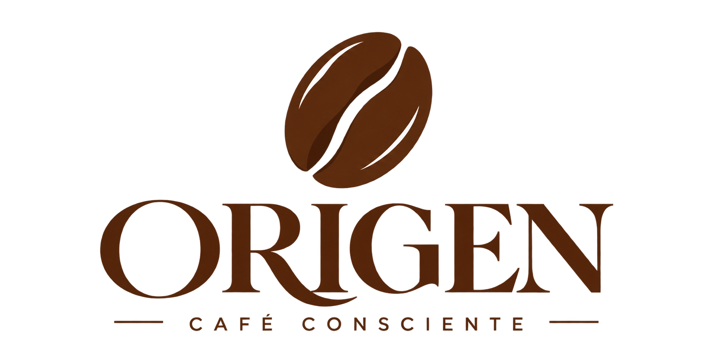
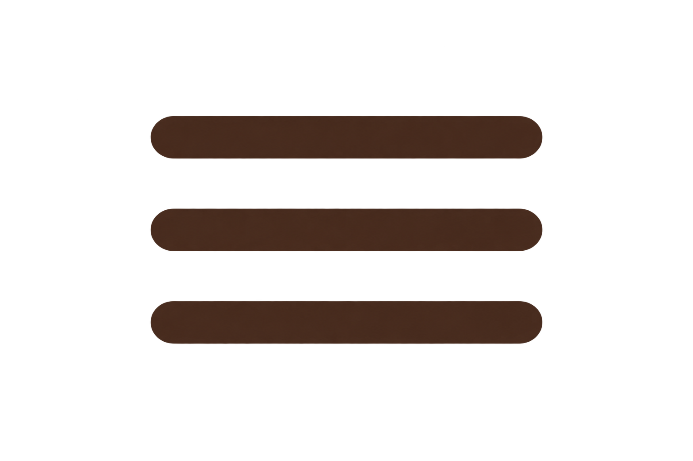

Cada taza tiene una huella. Descubrí cómo nuestras decisiones afectan al planeta.
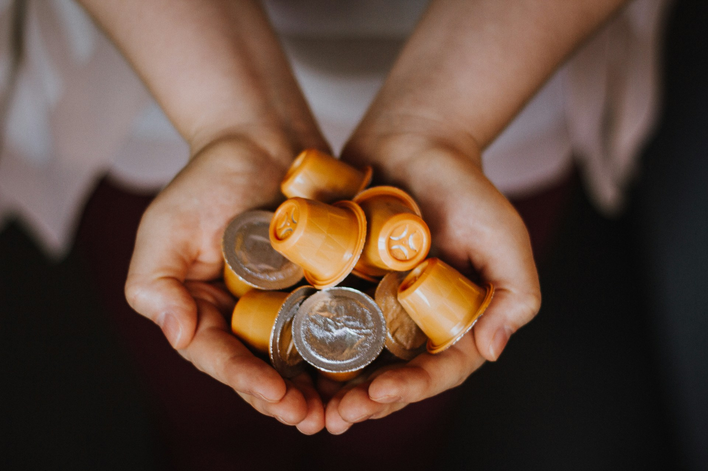
Conocé de qué están hechas las cápsulas de café y qué sucede cuando las desechamos.
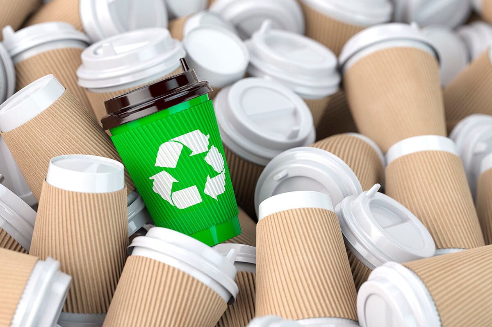
Aprendé cómo separar los residuos y darles una nueva oportunidad.
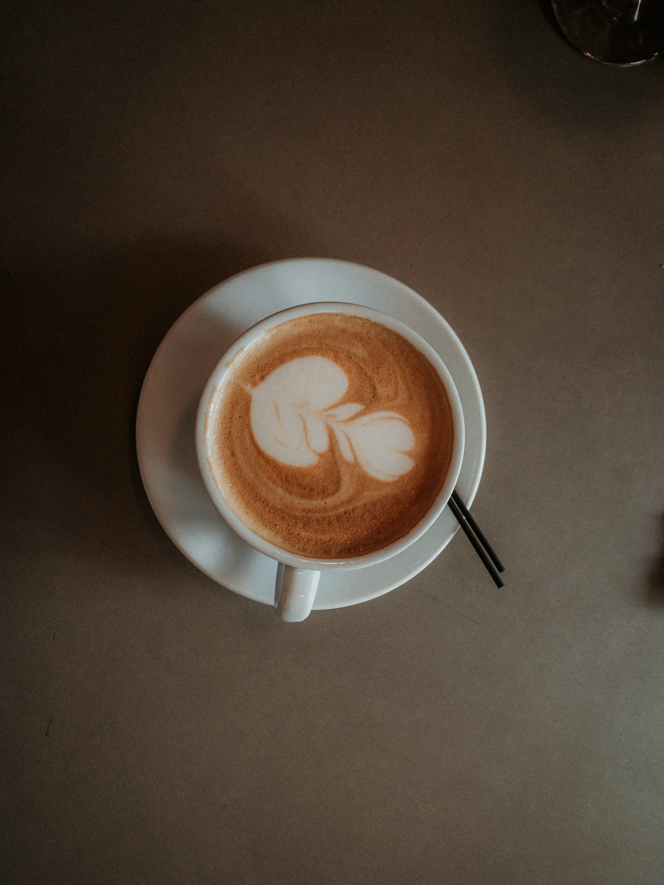
Explorá otras formas de disfrutar tu café generando menos residuos.
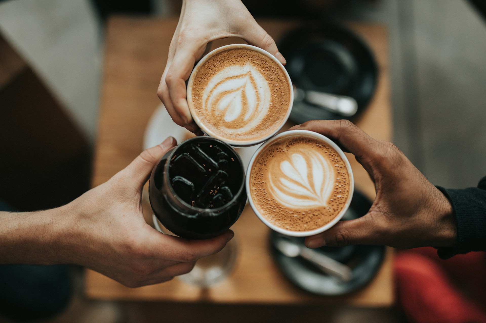
CONSUMO CONSCIENTE
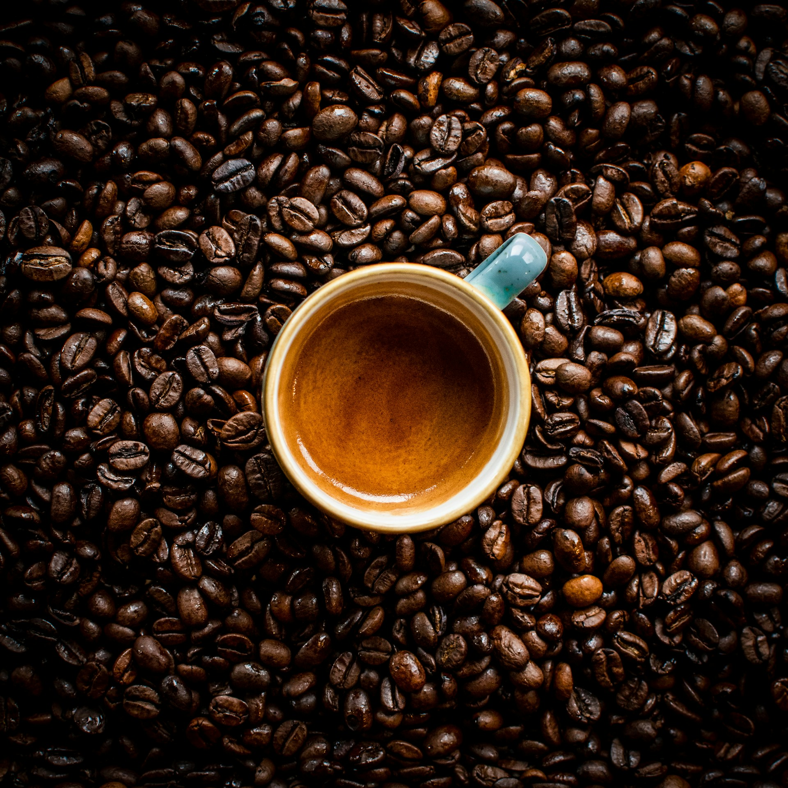
DESCUBRÍ MÁSDE LA TIERRA A TU TAZA
Desde el origen del café hasta la forma en que lo preparamos, cada decisión puede ayudarnos a reducir nuestra huella ambiental.
CONOCÉ EL RECORRIDO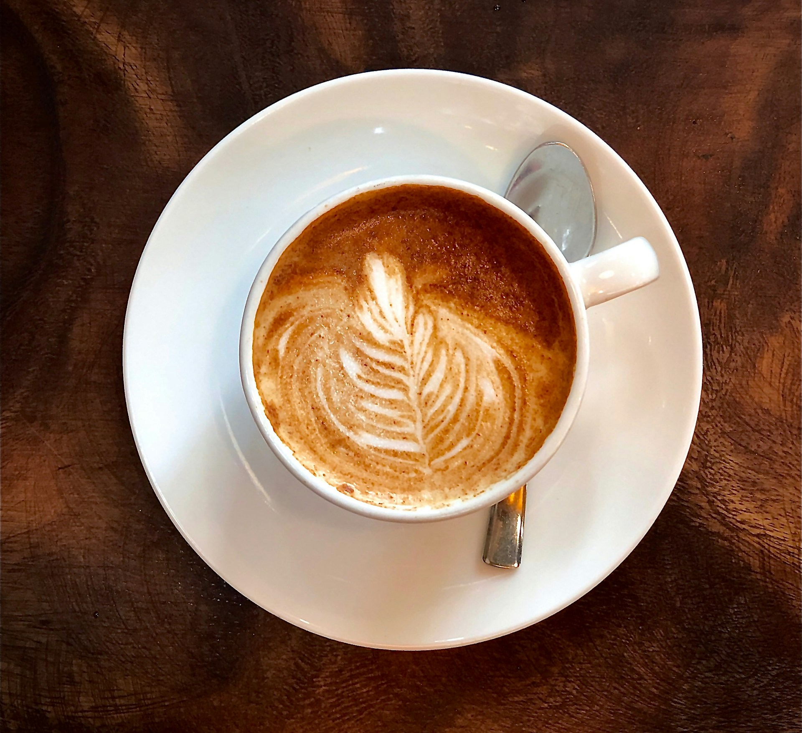
Pequeñas decisiones pueden transformar nuestra rutina y reducir el impacto ambiental de cada taza
Leer más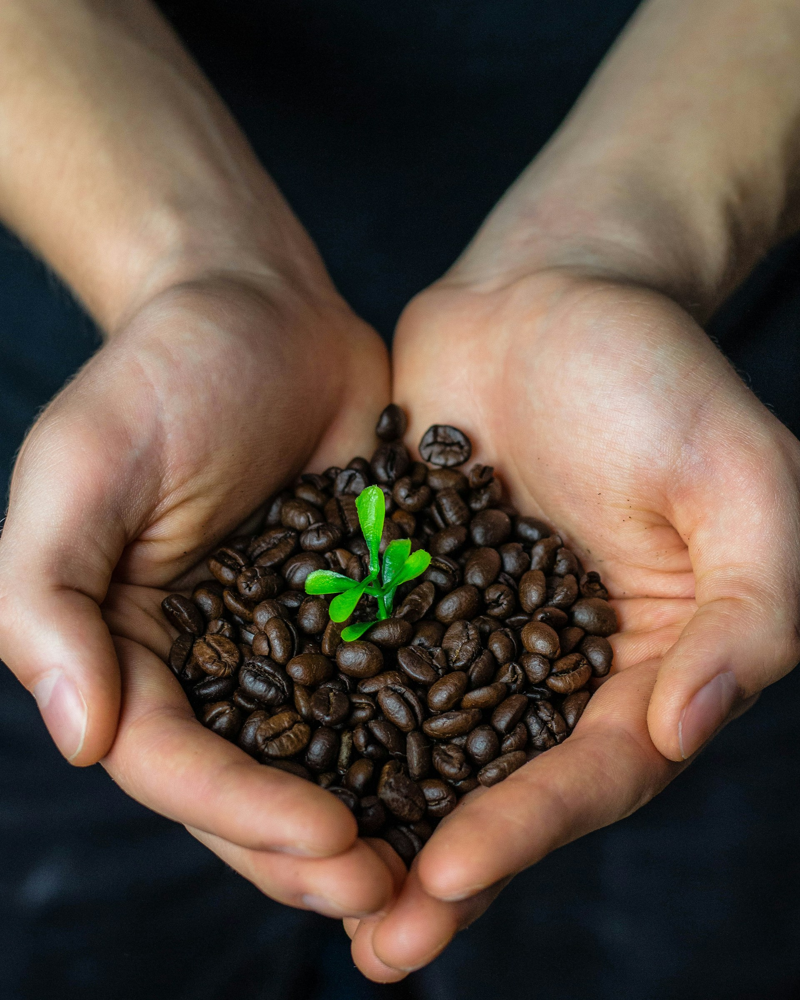
¿Sabías que tu taza de café deja una huella más allá de lo que imaginás?
Leer más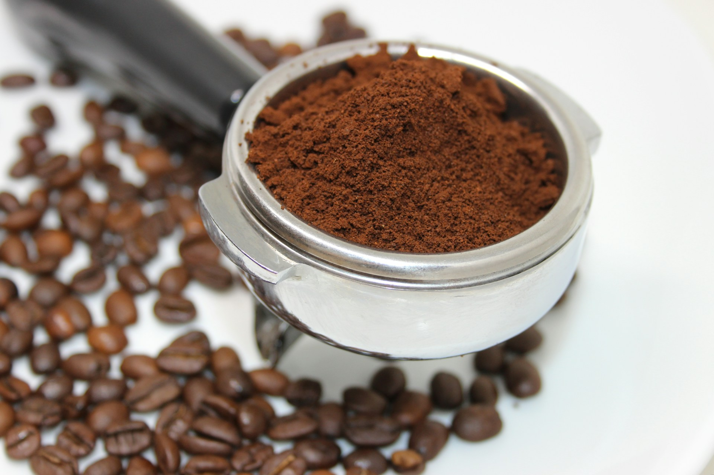
Descubrí nuevas formas de aprovechar los restos de tu café
Leer más